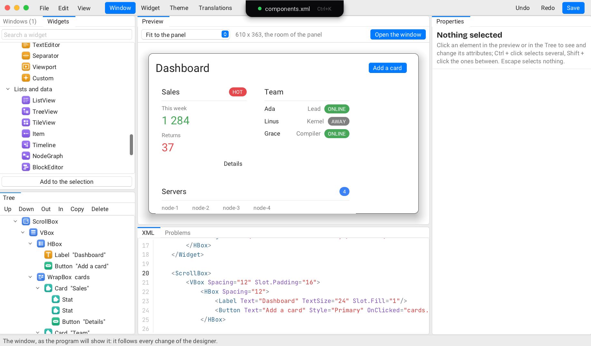

The designer
raven_designer makes the interfaces of Raven (.xml) by looking at them.
It works on a folder: the windows, the widget libraries, the themes and the translation
tables found in it. Nothing is compiled there: the program that loads the interfaces is
written elsewhere, in any language. The designer is itself made with Raven.

1. Starting
raven_designer the start page: open a folder, an interface, a recent folder raven_designer my_app/ui a folder raven_designer main.xml an interface, with its folder
File > New interface (Ctrl+N) makes a new file in the folder: a window (empty, ready for widgets), a panel, a form, a widget library, a theme. Everything is saved as XML you can read and change by hand; the designer follows a file another program saves.
2. The window
- Files: the files of the folder for the tab in front. Double click opens; right click: new, delete.
- Widgets: what can be added, by family, with the tags the folder declares first. Drag one into the preview or the Tree, or double click to add it inside the selection.
- Tree: the elements of the interface.
- Preview: the interface built for real, the selection outlined.
- Properties: every attribute of the selection, by kind of value.
- XML: the text, with completion; a mistake is listed in Problems while the last good version stays shown.
All of them show the same document and follow each other. The panels can be moved; View > Reset the panels puts them back.
3. Selecting
- A click in the preview or in the Tree selects an element. A click around the window, or Escape, selects nothing.
- Ctrl + click (Cmd on a Mac) adds an element to the selection, or takes it out.
- Shift + click selects the elements between the last one clicked and this one, when they are in the same panel.
- With several selected, the Properties panel shows the one clicked last; what is changed there goes to all of them.
4. Changing the interface
- Drag an element in the preview or in the Tree to move it: a line (in the preview) or the lit panel (in the Tree) shows where it goes, Escape cancels. In the Tree, the top of a row puts it before, the bottom after, the middle of a panel inside. Several selected move together.
- Ctrl+X, Ctrl+C, Ctrl+V: cut, copy and paste elements (as XML text: what is copied can be pasted in a text editor too). A paste goes inside the selection, or after it.
- Delete or Backspace removes the selection; Ctrl+D duplicates it.
- Edit > Wrap in puts the selection in a new panel (several of one panel: in the same one); Unwrap takes the panel away and keeps what it holds.
- Ctrl+Z, Ctrl+Y: undo, redo.
While a text is being typed (in the XML, in a property), these keys are for the text.
Buttons can name an action that needs no code (OnClicked="page:steps=+1",
"app.quit"...: see the XML reference). The preview does not
run them: the status bar says which action was fired.
5. The four tabs
- Window (Ctrl+1): the interfaces of the folder.
- Widget (Ctrl+2): the widget libraries (
<Widgets>), edited like a window; the windows of the folder can use their tags. - Theme (Ctrl+3): the theme editor, for the theme files of the folder.
- Translations (Ctrl+4): the tables (
.csv), one row per key, one column per language. In a text,@lists the keys.
6. The preview and the island
Above the preview: the size it is shown at (the size of the XML, a phone, a tablet...), the theme it wears and its language. F6 uses the preview as the interface will be used; F7 opens the window itself, at its size, and it follows every change.
The island at the top says what is open and selected. Ctrl+K opens its search:
a widget to add (add slider), a file to open, a command (wrap in a vbox),
a theme or a language for the preview. On a MacBook it lives in the notch.
7. Keys
| Keys | What they do |
|---|---|
| Ctrl+N | A new window |
| Ctrl+O, Ctrl+Shift+O | Open an interface, a folder |
| Ctrl+S, Ctrl+Shift+S, Ctrl+Alt+S | Save, save as, save all |
| Ctrl+Z, Ctrl+Y | Undo, redo |
| Ctrl+X, Ctrl+C, Ctrl+V | Cut, copy, paste elements |
| Delete, Backspace | Delete the selection |
| Ctrl+D | Duplicate |
| Alt+Up, Alt+Down | Move up, down in the panel |
| Alt+Left, Alt+Right | Move out of the panel, into the element before |
| Ctrl + click, Shift + click | Select several |
| Escape | Select nothing; cancel a drag |
| Ctrl+K | The search of the island |
| Ctrl+1 to Ctrl+4 | The tabs |
| F6, F7 | Use the preview; open the window |
| Ctrl+Q | Quit |
More: the designer in the guide (the folder followed live, scripts and tests).